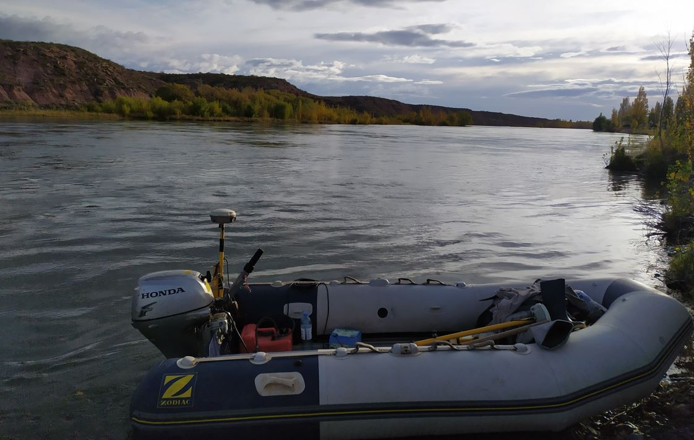
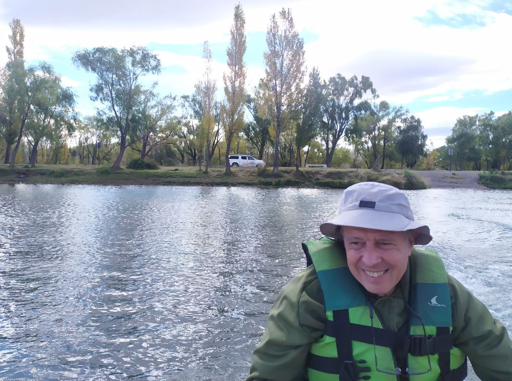

An update for the hidrological model of the Limay river was required for a coastal engineering project of the city of Neuquen. An topographic and bathimetric survey was carry on to provide updated data to build the model.
Process
GPS Survey
At the beginning of the project, a topographic survey with GPS equipment use carry on. All the coastal land, shallow waters, bridges and roads were survey

Bathimetry Survey
In the second part of the project, a bathimetric survey was made. The bottom of the Limay river was survey with a probe over a boat, making profiles from one coast to the other.
